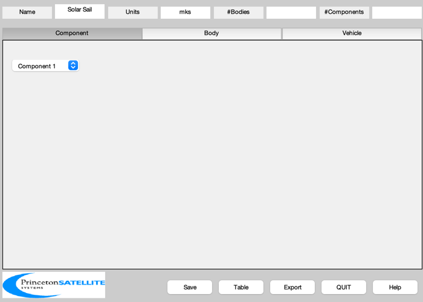
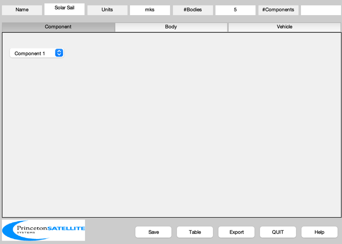
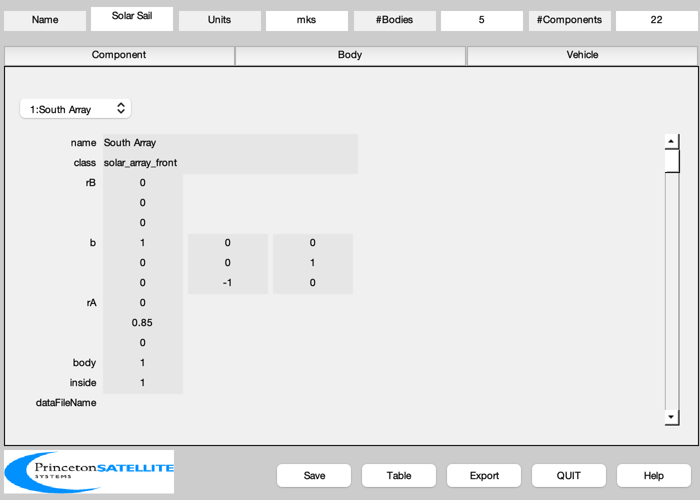
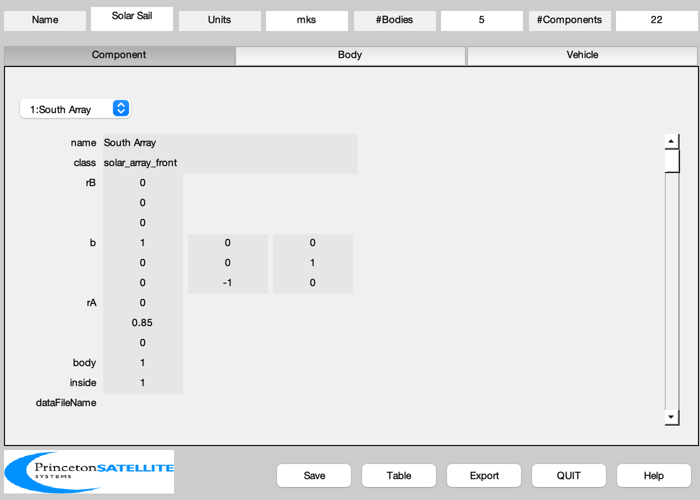
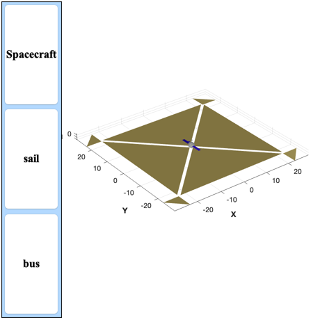

Build a solar sail model using BuildCADModel.
Has two subsystems, the sail and the bus. ------------------------------------------------------------------------ See also BuildCADModel, CreateBody, CreateComponent, MassStructure, Eul2Mat, QLVLH ------------------------------------------------------------------------
Contents
%------------------------------------------------------------------------------- % Copyright (c) 2001-2002 Princeton Satellite Systems, Inc. % All rights reserved. %------------------------------------------------------------------------------- %-------------------------------------------------------------------------------
Specify model data
%------------------------------------------------------------------------------- % State %------ r = 42167; v = sqrt(3.98600436e6/r); rECI = [r;0;0]; vECI = [0;v;0]; qLVLH = QLVLH( rECI, vECI ); q = [1;0;0;0]; omega = [0;-v/r;0]; inToM = 0.0254; % Square Sail %------------ area = 2000; % m2 lSail = sqrt(area); lCore = 1.5; arrayLength = 2; %-------------------------------------------------------------------------------
Initialize CAD Model
%------------------------------------------------------------------------------- BuildCADModel( 'initialize' ); %------------------------------------------------------------------------------- % Add spacecraft properties %------------------------------------------------------------------------------- BuildCADModel( 'set name' , 'Solar Sail' ); BuildCADModel( 'set units', 'mks' ); BuildCADModel( 'set rECI' , rECI ); BuildCADModel( 'set vECI' , vECI ); BuildCADModel( 'set qLVLH', qLVLH ); BuildCADModel( 'set qECIToBody', q ); BuildCADModel( 'set omega', omega ); %-------------------------------------------------------------------------------
Create bodies
%------------------------------------------------------------------------------- % Core %----- m = CreateBody( 'make', 'name', 'Core' ); BuildCADModel('add body', m ); % These are panels used for momentum management % 1: +X,+Y, 2:+X,-Y, 3:-X,-Y, 4:-X,+Y %---------------------------------------------- rHingePanel = 1.03*[1 1 -1 -1;1 -1 -1 1;0 0 0 0]*lSail/2; rHingePanel(3,:) = -[1 1 1 1]; bHingePanel = { Eul2Mat([0 0 pi/4]) Eul2Mat([0 0 3*pi/4])... Eul2Mat([0 0 5*pi/4]) Eul2Mat([0 0 7*pi/4]) }; for k = 1:4 m = CreateBody( 'make', 'name', sprintf('Panel %i',k),... 'bHinge', struct( 'b', bHingePanel{k}, 'axis', 2 ),... 'previousBody', 1, 'rHinge', rHingePanel(:,k) ); BuildCADModel('add body', m ) ; end % This creates the connections between the bodies %------------------------------------------------ BuildCADModel( 'compute paths' ); %-------------------------------------------------------------------------------
Add Components to the Bodies
%------------------------------------------------------------------------------- arrayStrut = lCore/2+0.1; % South Solar Array %------------------ m = CreateComponent( 'make', 'solar array front', 'z', arrayLength, 'x', 1,... 'nZ', 2, 'nX', 1, 'dirZ', 1,'theta', 0,... 'electricalConversionEfficiency', 0.25, 'b', [1 0 0;0 0 1;0 -1 0],... 'rA', [0 arrayStrut 0]', 'mass', 10/(9.806/inToM), 'cM', [0;66;0],... 'name', 'South Array', 'body', 1, 'faceColor', 'solar cell' ); BuildCADModel( 'add component', m ); % North Solar Array %------------------ m = CreateComponent( 'make', 'solar array front', 'name', 'North Array',... 'z', arrayLength, 'x', 1, 'nZ', 2, 'nX', 1, 'dirZ', -1,... 'theta', 0, 'electricalConversionEfficiency', 0.25,... 'b', [1 0 0;0 0 1;0 -1 0],'rA', [0 -arrayStrut 0]',... 'mass', 10/(9.806/inToM), 'cM', [0;-66;0],... 'body', 1, 'faceColor', 'solar cell' ); BuildCADModel( 'add component', m ); % Panels %------------------ lPanel = lSail/5; v = [ 0 lPanel/2 -lPanel/2 0 lPanel/2 -lPanel/2;... 0 lPanel/2 lPanel/2 0 lPanel/2 lPanel/2;... 0 0 0 0 0 0]'; panelName = {'+X/+Y' '+X/-Y' '-X/-Y' '-X/+Y'}; f = [1 2 3;6 5 4]; for k = 1:4 m = CreateComponent( 'make', 'generic','name', ['Panel ' panelName{k}],... 'vertex', v, 'face', f,'inside',0,... 'faceColor', [1 0.9 0.5], 'edgeColor', [1 0.8 0.34],... 'specularStrength', 1, 'diffuseStrength', 0.3,... 'rA', [0;0;0], 'mass', 2, 'body', k+1 ); BuildCADModel( 'add component', m ); end % Panel drive motors %------------------- c45 = cos(pi/4); u = c45*[1 1 -1 -1;1 -1 -1 1;0 0 0 0]; for k = 1:4 m = CreateComponent( 'make', 'single axis drive', 'name', ['Drive ' panelName{k}],... 'powerStandby', 25,'unitVector', u(:,k),... 'faceColor', [0.6 0.6 0.6],... 'rA', [0;0;0], 'mass', 0.5, 'body', 1,... 'drivenBody', k ); BuildCADModel( 'add component', m ); end % Sails %------------------- dZ = 1; v = [ 0 lSail/2 -lSail/2;... 0 lSail/2 lSail/2;... dZ dZ dZ ]'; sailName = {'+Y' '-Y' '+X' '-X'}; f = [1 2 3]; x = 0.8; z = -lCore/2-1; rSail = {[0 x z]' [0 -x z]' [x 0 z]' [-x 0 z]' }; bSail = { eye(3) Eul2Mat([0 0 pi]) Eul2Mat([0 0 pi/2]) Eul2Mat([0 0 -pi/2]) }; for k = 1:4 m = CreateComponent( 'make', 'generic', 'name', ['Sail ' sailName{k}],... 'rA', rSail{k}, 'mass', 20,'inside',0,... 'faceColor', [1 0.9 0.5], 'edgeColor', [1 0.8 0.34], 'b', bSail{k}, ... 'specularStrength', 1, 'diffuseStrength', 0.3,... 'vertex', v, 'face', f, ... 'body', 1 ); BuildCADModel( 'add component', m ); end % Component 7: Core %------------------ m = CreateComponent( 'make', 'box', 'x', lCore, 'y', lCore, 'z', lCore,... 'faceColor', 'aluminum', 'edgeColor', [0.7 0.7 0.7],... 'rA', [0;0;0], 'mass', 10, 'name', 'Core', 'body', 1 ); BuildCADModel( 'add component', m ); % Component 8: +Y radiator %------------------------- m = CreateComponent( 'make', 'radiator', 'x', lCore, 'y', 0.1, 'z', lCore,... 'faceColor', 'aluminum', 'edgeColor', [0.7 0.7 0.7],... 'rA', [0; 1.1*lCore/2; 0], 'mass', 2,... 'name', 'Radiator +Y', 'body', 1 ); BuildCADModel( 'add component', m ); % Component 9: -Y radiator %------------------------- m = CreateComponent( 'make', 'radiator', 'x', lCore, 'y', 0.1, 'z', lCore,... 'faceColor', 'aluminum', 'edgeColor', [0.7 0.7 0.7],... 'rA', [0; -1.1*lCore/2; 0], 'mass', 2,... 'name', 'Radiator -Y', 'body', 1 ); BuildCADModel( 'add component', m ); % Components 10 - 12: Reaction wheels %------------------------------------ spacecraftHalfWidth = lCore/2; panelThickness = lCore/100; rWADiameter = 0.108; rWAHeight = 0.108; rWAMass = MassStructure( 2.6, 'cylinder', [rWADiameter/2 rWAHeight] ); % X wheel %-------- rA = [spacecraftHalfWidth-rWAHeight/2-panelThickness;... spacecraftHalfWidth-rWAHeight/2;... lCore - rWADiameter/2]; m = CreateComponent( 'make', 'reaction wheel', 'model', 'hr60',... 'unitVector', [1;0;0],'rA', rA, 'mass', rWAMass,... 'name', 'RWA X', 'body', 1 ); BuildCADModel( 'add component', m ); % Y wheel %-------- rA = [spacecraftHalfWidth-rWADiameter/2-panelThickness;... spacecraftHalfWidth-rWADiameter - rWAHeight/2;... lCore - rWADiameter/2]; m = CreateComponent( 'make', 'reaction wheel', 'model', 'hr60',... 'unitVector', [0;1;0],'rA', rA, 'mass', rWAMass,... 'name', 'RWA Y', 'body', 1 ); BuildCADModel( 'add component', m ); % Z wheel %-------- rA = [spacecraftHalfWidth-rWAHeight/2-panelThickness;... spacecraftHalfWidth-rWAHeight/2;... lCore - 3*rWADiameter/2]; m = CreateComponent( 'make', 'reaction wheel', 'name', 'RWA Z', ... 'model', 'hr60', 'unitVector', [0;0;1],... 'rA', rA, 'mass', rWAMass, 'body', 1 ); BuildCADModel( 'add component', m ); % Chassis %-------- chassisThickness = 3*inToM; chassisWidth = 7*inToM; chassisHeight = 4*inToM; rA = [-spacecraftHalfWidth+panelThickness+chassisThickness/2;... 0;... lCore - chassisHeight/2]; m = CreateComponent( 'make', 'pcu', 'name', 'Chassis', ... 'x', chassisThickness, 'y', chassisWidth, 'z', chassisHeight,... 'faceColor',[0 0 1], 'edgeColor',[0 0 1],... 'rA', rA, 'mass', 3, 'body', 1, 'powerStandby', 15 ); BuildCADModel( 'add component', m ); % Battery %-------- rA = [-spacecraftHalfWidth + panelThickness + 0.1153; spacecraftHalfWidth - 0.0971; 0.92*lCore - 0.1273]; m = CreateComponent( 'make', 'battery', 'name', 'Battery', 'body', 1,... 'x', 0.3453, 'y', 0.1942, 'z', 0.2546,... 'faceColor',[0 0 1], 'edgeColor',[0 0 1],... 'rA', rA, 'mass', 12, 'batteryCharge', 1.08e6, 'batteryCapacity', 1.2e6 ); BuildCADModel( 'add component', m ); %-------------------------------------------------------------------------------
Create subsystems of components
%------------------------------------------------------------------------------- BuildCADModel( 'add subsystem', 'sail',... {'panel','drive','sail'} ); BuildCADModel( 'add subsystem', 'bus', {'rwa','array','Core','radiator',... 'chassis','battery'} ); %-------------------------------------------------------------------------------
Get the finished model as a struct
%------------------------------------------------------------------------------- % When you get the model the mass properties are automatically updated. g = BuildCADModel('get model'); BuildCADModel('show spacecraft'); %-------------------------------------- % $Id: 6ec4133407a3b19cd3afcb1f5373aa3a6fce2e76 $ 